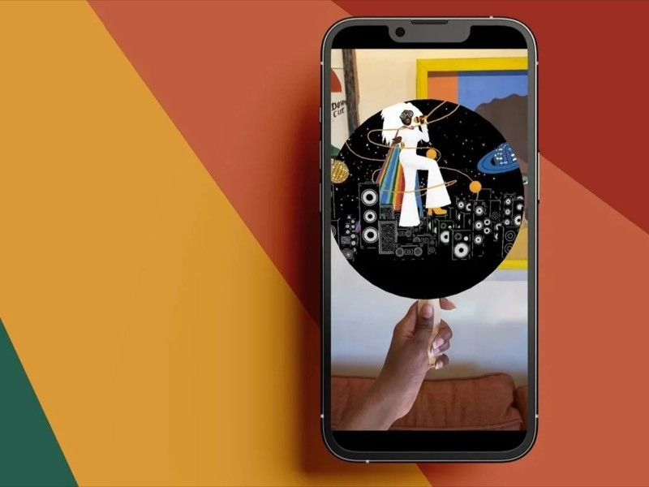
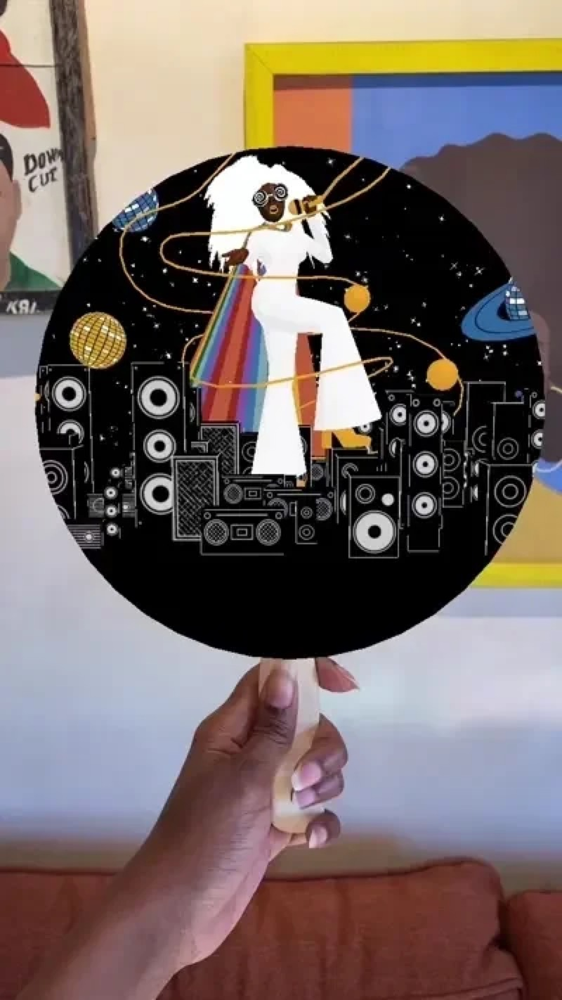

A crossover physical and digital activation at Meow Wolf's House of Eternal Return
This was a physical and digital activation for Janell Langford's Obsidiopolis room inside Meow Wolf's House of Eternal Return. Visitors received a custom church fan with an embedded RFID chip, which unlocked interactions tied to the room. Lauren Cason and I worked on it together.
The fan was also extended into AR. It became the marker for an Instagram effect that opened a portal into the world of Obsidiopolis, with reactive visuals and synchronized audio. The fan and the digital layer were designed as parts of the same experience.

